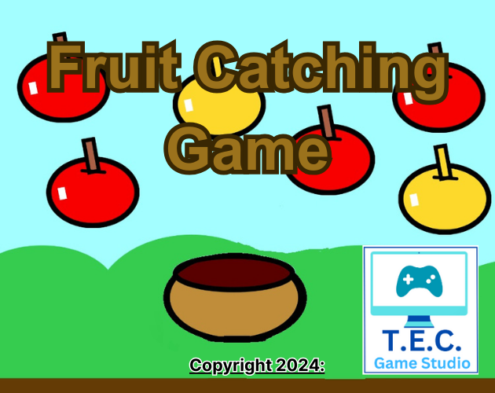
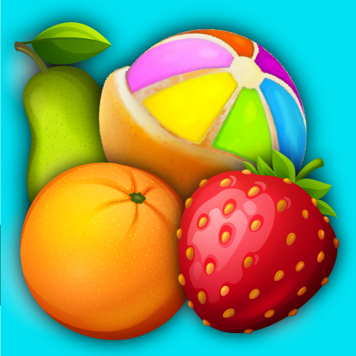
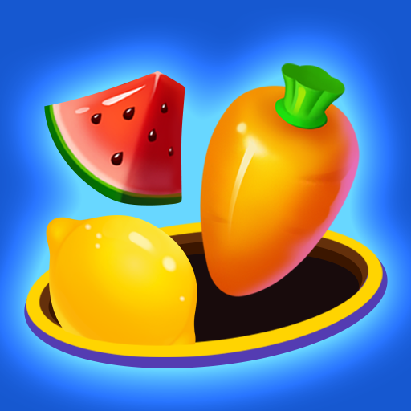

Nacido de nuestro deseo de crear un juego de arcade de estilo clásico con mecánicas adictivas, el desarrollo de Catch Game se centró en la generación procedural y la física dinámica. Este proyecto forma parte del pack de juegos que hemos recreado desde cero en Java para rescatar la esencia de los clásicos de los 80.
El objetivo es mover el cubo situado en la parte inferior de la pantalla para atrapar las frutas que caen de forma procedural. Cada fruta recogida suma puntos al marcador del jugador. Sin embargo, el jugador debe evitar a toda costa las bombas mimetizadas con las frutas; atrapar una bomba o dejar caer tres frutas hará que el jugador pierda una de sus vidas.
Nivel: Escalable (Progresivo). Hemos implementado un vector de gravedad iterativo. A medida que aumenta la puntuación del jugador, las frutas caen más rápido y las bombas aparecen con más frecuencia, desafiando los reflejos y la agilidad visual del jugador en una carrera contra el tiempo.
A nivel de código, hemos empleado programación orientada a objetos para manejar las distintas entidades asíncronas. La generación procedural se gestiona mediante un javax.swing.Timer, creando una nueva entidad de fruta o bomba a intervalos regulares. Utilizamos la intersección de *hitboxes* de tipo Rectangle para la detección de colisiones.